1. The Problem
Urban rail is too slow and expensive to deploy
- Proprietary vehicle and signalling packages create lock-in.
- Capital cost makes medium-size corridors hard to justify.
- Integration evidence is often document-heavy and hard to regenerate.
- Local manufacturers are pushed toward low-value installation work.
OpenSourceRail's bet
- Publish reference designs and machine-readable interfaces.
- Use commodity hardware and certified COTS modules where sensible.
- Keep the safety case explicit, testable, and versioned with the design.
- Make local fabrication the default: cut, weld, bond, bolt, test.
OpenReadable source artifacts.
RepeatableRegenerate cities, CAD, BOMs, docs.
ModularSwap suppliers if envelopes fit.
AssessableEvidence links to tests and drawings.
Design automation
GIS and city templates generate alignments, station placements, maps, cost summaries, and simulator scenarios.
Control software
Rust crates cover simulator, interlocking, ATP, brake, obstacle detection, TCMS, GUIs, and safety-case compilation.
Mechanical CAD
Parametric source generates trainsets, bogies, track, civil works, stations, depots, FreeCAD review files, and screenshots.
Hardware hosts
Reference SBC/ECU classes define train, wayside, station, and obstacle-detection hosts.
Operations docs
Rulebooks, staff procedures, maintenance flows, and depot processes live with the technical design.
Safety evidence
Certification and GSN documents capture assumptions, tests, and remaining evidence gaps.
2. Reference Vehicle
51 m3-car reference consist over couplers.
17 mRepeated car module for local fabrication.
12 doorsTwo low-floor door pairs per side per car.
Passenger layout
- About 10 m low-floor centre section.
- PRM spaces and wheelchair turning circles in the centre zone.
- Longitudinal seats over under-seat sodium-ion batteries.
Running gear
- Standard bogies about 3 m long at car ends.
- High-floor end decks over bogies.
- Two powered bogies and four trailer bogies in the base consist.
Driverless ends
- Single panoramic-glass passenger view, front and rear.
- LED headlamp and marker bars below the glass.
- T-OBS sensors behind serviceable cowl hardware.
Design authority
Parametric source in mechanical-py/src/osr_mech/rolling_stock is the basis. FreeCAD files and PNGs are generated review and handoff artifacts.
Procurement stance
Make the steel datum structure locally; use supplier-neutral envelopes for doors, windows, HVAC, bogies, traction, batteries, electronics, and passenger modules.
3. Trainset Layout
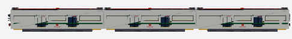
Why 17 m cars?
The 17 m module keeps a 3-car train at 51 m, leaves platform margin on a derived 61 m standard station, and remains workshop-friendly.
- Standard bogies sit at each car end.
- Raised decks cover bogie structure and service access.
- The low-floor middle supports doors, PRM bays, and passenger flow.
- Capacity scales by adding repeated cars or by a later 19-20 m variant.
2 + 4Two powered bogies, four trailer bogies.
12Exterior door cassettes per consist.
450 kWhReference sodium-ion onboard energy.
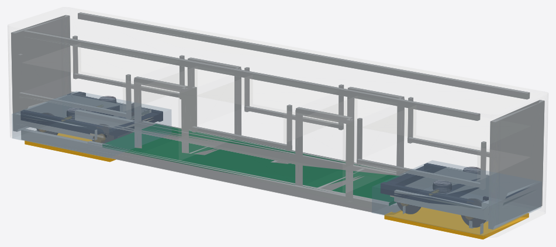
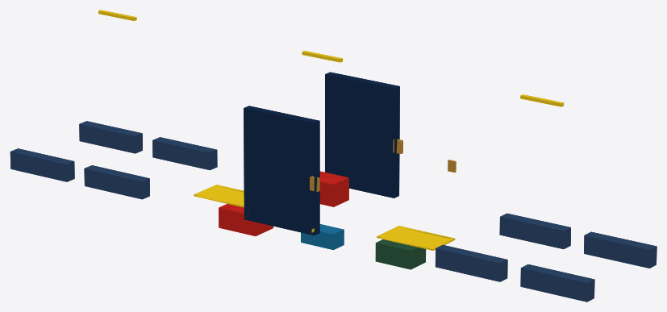
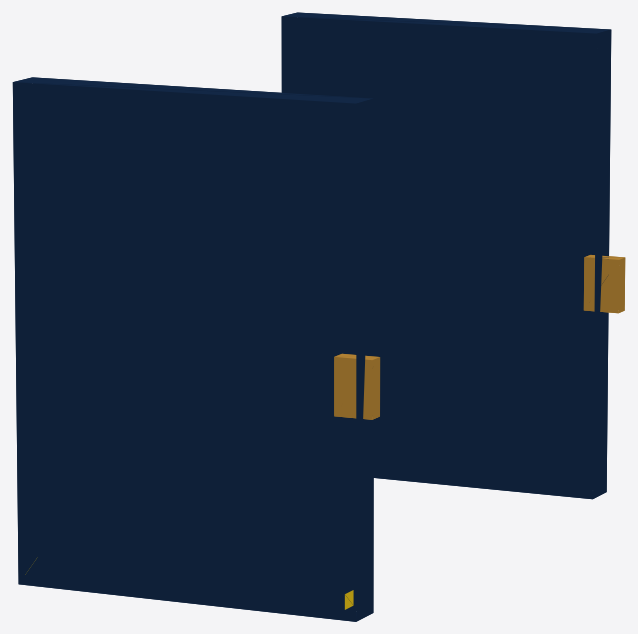
5. Body Structure And Load Path
Fabricated, inspectable steel
- S355 underframe ladder and side/roof spaceframe.
- Door portal posts and headers around COTS cassettes.
- Window posts, waist rails, cantrails, and end rings.
- Anti-climber beam and single panoramic-glass cowl structural ring.
- Bogie rotation, suspension-travel, and drop-zone envelopes.
7. Driverless Ends And Sensing
Glass-pane ends
The ends are not cab partitions. Passengers retain a forward/rear view through one large heated RF-transparent panoramic glass pane.
T-OBS sensor pack
LIDAR, mmWave radar, stereo cameras, and ultrasonic sensors sit behind serviceable cowl hardware.
Recovery only
Hidden maintenance/recovery controls are not a normal driver cab.
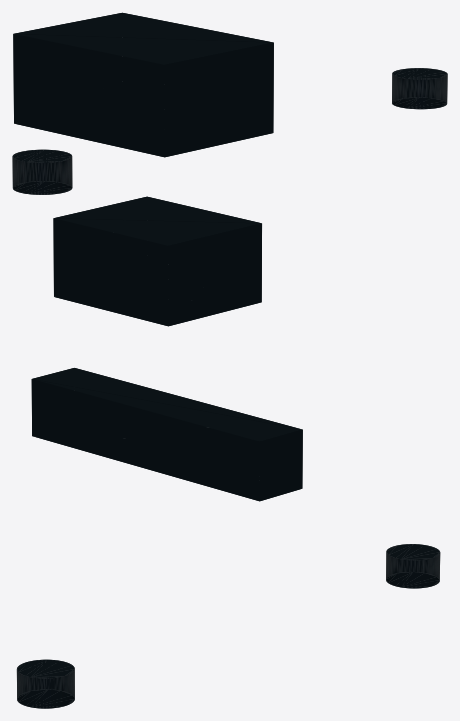
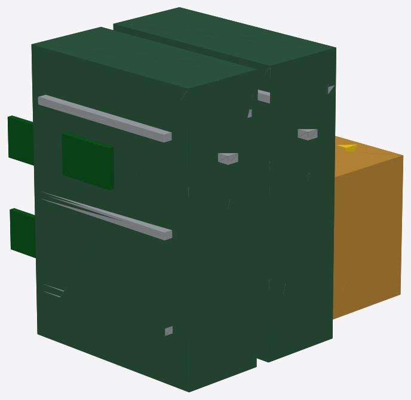
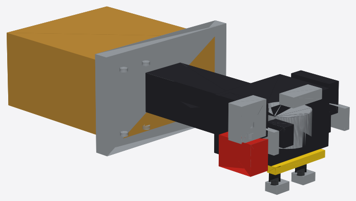
8. Bogies And Running Gear
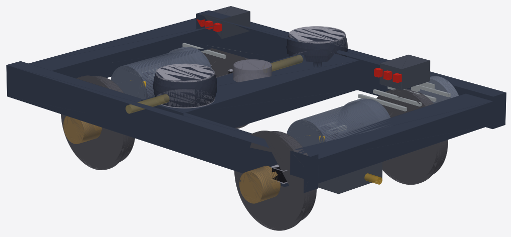
Standardized bogie strategy
- Two powered bogies total, at the outer end cars.
- Four trailer bogies using the common frame and suspension envelope.
- Powered bogie includes PMSM motors, gearboxes, brakes, and suspension.
- Trailer bogie keeps the same maintainable running-gear architecture without traction drives.
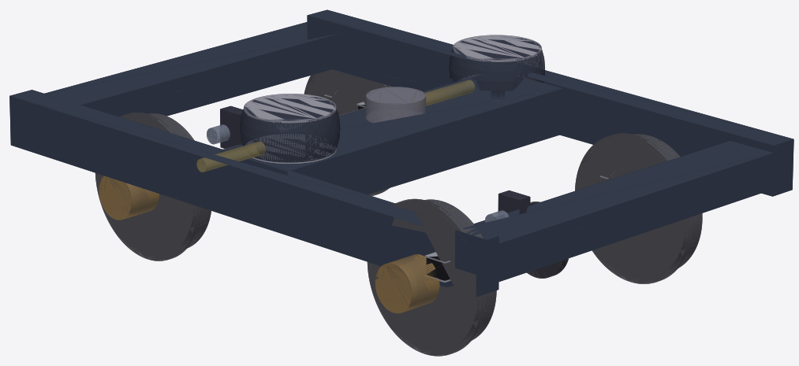
10. Stations And Civil Works
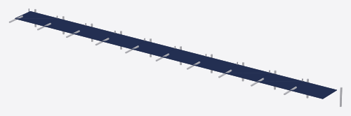
Station pattern
- Low platform interface at the 350 mm train floor datum.
- Platform screen-door alignment and train-side interlocks are reserved in CAD.
- Station charging can be side-pin or pantograph-down depending on civil geometry.
- Stations, track, and city designs regenerate from machine-readable templates.
11. City Design Automation
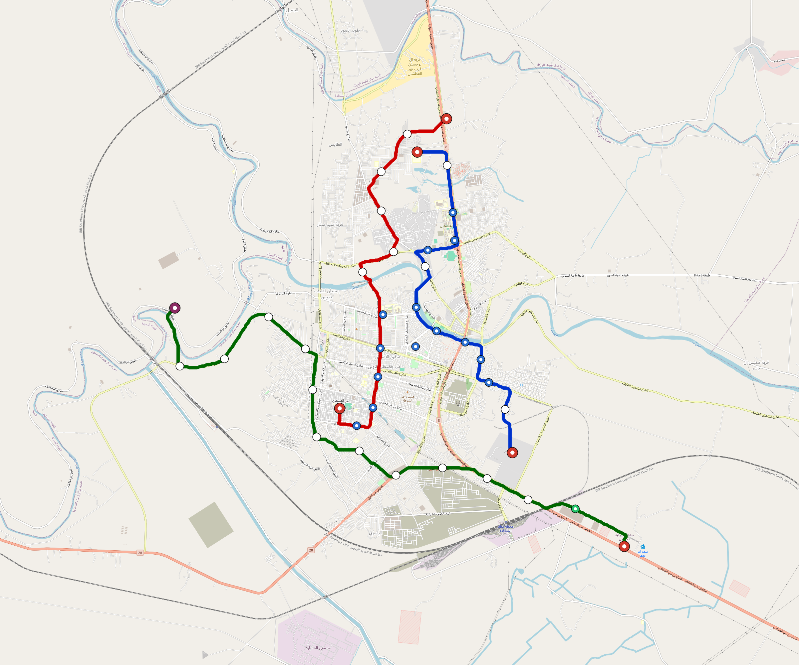
From city inputs to runnable scenarios
- World sample batches define candidate cities.
- GIS tooling emits route GeoJSON, maps, quality YAML, and README summaries.
- Rust design synthesis produces simulator scenarios and cost summaries.
- Every city folder is a reproducible design package.
12. Simulator And Control Stack
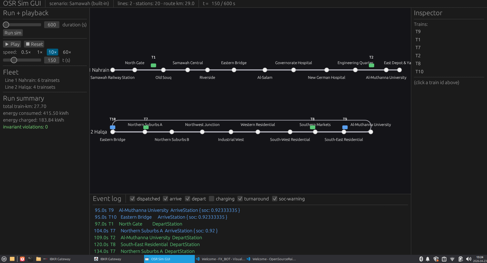
Software crates
- Simulator and scenario execution.
- Interlocking, ATP, brake, and obstacle-detection crates.
- TCMS and GUI tooling.
- Safety-case compiler and verification support.
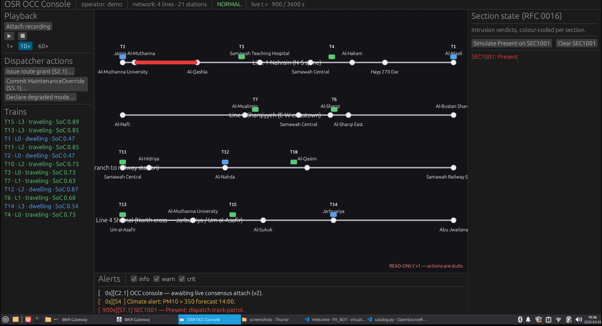
13. Hardware Host Classes
T-ECU/S
Train safety kernel host for safety-related train functions.
T-ECU/A
Train application computer for non-safety application logic and integrations.
T-OBS
Obstacle-detection host connected to the driverless nose sensor pack.
W-SBC
Wayside controller class for station and trackside equipment.
S-SBC
Station/depot host for local operations and maintenance integration.
DIY pilots
Commodity-module assembly path for lab and early integration builds.
14. Safety And Certification
Safety case is part of the product
The repository includes RFCs, safety-case documents, certification packs, operations rules, and formal models. The project does not certify deployments; it produces artifacts suitable for independent assessment.
Evidence direction
- Requirements and assumptions are explicit.
- Tests and generated artifacts are linked to source.
- Supplier documents fit controlled interface envelopes.
- Authority review remains deployment-specific.
ConceptReference architecture and RFCs.
v1Envelope CAD, BOM, docs, simulation.
v2Supplier envelopes and shop drawings.
First articleBuild, inspect, static test.
AssessmentIndependent review and authority process.
15. Manufacturing, Cost, Operations
Manufacturing doctrine
| Scope | Default | Reason |
|---|
| Primary structure | MAKE: cut, bend, weld S355 steel | Common regional workshop capability. |
| Panels | BID/SOURCE composite panels | Low tooling cost and replaceable after damage. |
| Doors, windows, HVAC | COTS or BID modules | Use certified rail/bus evidence instead of bespoke development. |
| Bogies | Qualified MAKE plus certified rotating/brake parts | Local frame production with supplier evidence for safety-critical parts. |
| Traction and BMS | BID/SOURCE packages | Supplier qualification, EMC, and lifecycle test evidence required. |
Planning-grade cost direction
$2.21MDirect material planning estimate for 3-car consist.
$2.98MPlanning-grade consist cost after shop labor uplift.
12COTS electric door cassettes per consist.
18COTS window cassettes per consist.
MAKE
Fabricator-owned steel datum parts, brackets, harness supports, and local tooling.
BID/SOURCE
Doors, windows, HVAC, electronics, traction, bogie parts, and passenger modules.
Operations
Rulebook, OCC guidance, station staff procedures, and depot flows are kept with the technical design.
Maintenance
Bolted service cassettes, removable skirts, access lids, and supplier module replacement.
Recovery
Rescue couplers, recovery cabinets, and explicit degraded-mode procedures for driverless service.
16. Deployment Workflow And Repository Map
1. Select corridorUse city generation and GIS evidence.
2. Configure systemPick consist, station, depot, energy, and operations templates.
3. Freeze envelopesSupplier modules must fit reserved interfaces.
4. Build first articleFabricate, install COTS modules, inspect.
5. Certify locallySubmit evidence to authority and independent assessor.
Repository map
| Path | Purpose |
|---|
| crates/ | Rust simulator, control, safety, GUI, and design tools. |
| design-py/ and designs/ | GIS sidecar and generated city design packages. |
| mechanical-py/ | Parametric mechanical source and generated FreeCAD review artifacts. |
| hardware/ | Hardware references and host-class integration. |
| docs/ | Architecture, RFCs, operations, certification, safety case, rolling-stock docs. |
| formal/ | TLA+ consensus specification and model-checking harnesses. |
Regenerable artifacts
City packages
Route GeoJSON, maps, quality YAML, simulator scenarios, and README summaries.
Mechanical outputs
CAD screenshots, FreeCAD review files, rolling-stock BOM, and manufacturing views.
Software evidence
Tests, simulator runs, formal models, and safety-case traces.
Reader editions
Brochures, documentation books, and repository indices.
17. Regeneration Commands And Evidence Hooks
Repository health
python3 scripts/repo-health.py --quiet
Mechanical tests
PYTHONPATH=mechanical-py/src pytest mechanical-py/tests -q
CAD screenshots
PYTHONPATH=mechanical-py/src python3 mechanical-py/scripts/render_screenshots.py
FreeCAD review files
PYTHONPATH=mechanical-py/src mechanical-py/scripts/freecad_trainset.sh --family light-metro-3car
BOM CSV
python3 scripts/export-light-metro-bom.py
City regeneration
scripts/regenerate-city.sh samawah
TestsUnit, integration, simulator, and formal checks identify artifact drift.
Drawingsv2 drawing register turns envelope CAD into shop-release control.
EvidenceCertification and safety-case folders record assumptions and gaps.
Evidence release chain
Design freezeGenerated assemblies, BOM, screenshots, and supplier envelope checks.
Simulation freezeRoutes, stations, headways, degraded modes, and reproduced scenario logs.
Hardware freezeHost class, IO map, watchdog policy, and safety boundary assumptions.
Assessment packHazards, mitigations, open evidence requests, and authority handoff notes.
Release noteWhat changed, which artifacts regenerated, and which checks passed.
18. v0.2 Focus And Next Reading
Rolling stock detail design
- Supplier exact envelopes for doors, windows, HVAC, traction, and bogie components.
- 2D shop drawings, weld maps, tolerance stacks, and inspection plans.
- Harness clamp locations, maintainability clearances, FEA-ready brackets, and drawing control.
System integration
- Station charging interface and platform screen-door proof.
- Hardware bring-up and simulated end-to-end control paths.
- Expanded certification evidence, test traceability, generated cities, and cost comparisons.
Core entry points
- README.md for the repository overview.
- docs/ARCHITECTURE.md for system structure.
- docs/rolling-stock/light-metro-3car/README.md for the reference train.
- docs/rfcs/README.md for design decisions.
- docs/certification/ and docs/safety-case/ for assessment evidence.
Open artifact, not a certifier
OpenSourceRail produces open designs, software, hardware references, and evidence packs. Deployment partners and national authorities remain responsible for supplier qualification, safety assessment, homologation, and operation.
Start with the generated trainset and production graphics, then follow the parametric source.
v0.2 deliverable checklist
Rolling stock CADExact supplier envelopes and 2D shop drawing register.
Body and chassisBend sequence, weld map, access panels, and datum scheme.
Electrical and HVACHarness zones, duct routes, service clearances, and module boundaries.
Deployment evidenceCity comparisons, cost sensitivity, and assumption ledger.